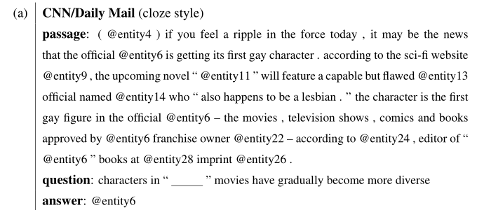
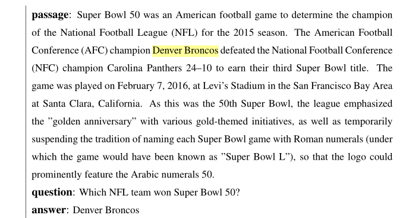
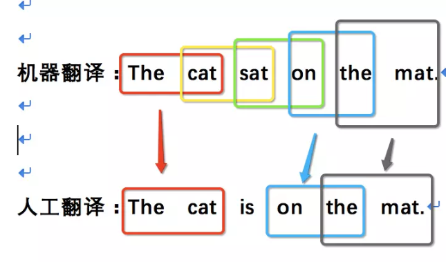
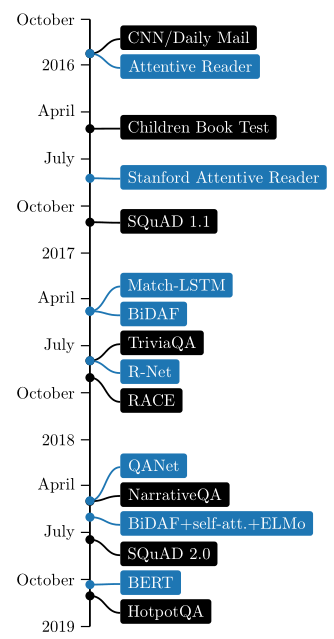
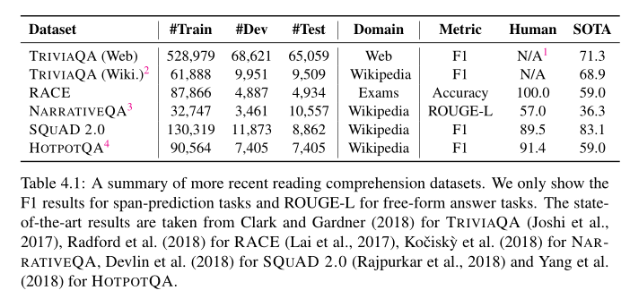

Neural Reading Comprehension and beyond 阅读笔记¶
Chapter 1 Introduction¶
- 怎样叫做理解人类语言？
- 词性标注
part-of-speech tagging- 专有名词 常用名词 动词 形容词 介词
- 命名实体识别
named entity recognition- 人名 地名
- 句法分析
syntactic parsing- 理解每一个句子
- 单词之间的关系
- 语法结构
- 理解每一个句子
- 共指消解/指代消解
coreference resolution- 句子之间的相互作用
- She 指代上文的 A
- The girls 指代上文的 ABCD
- 句子之间的相互作用
- 词性标注
- 如何全面地测试评估这些方面？
- 阅读理解——基于一段文本回答阅读理解问题

- 计算机系统必须理解文本的许多不同方面才能正确回答这些问题
- 本论文的核心主题之一：由于可以设计问题来检测我们关心的某些方面，阅读理解可能是评估语言理解的最合适的任务
- 最近阅读理解的成功是为什么？
(passage, question, answer)的三元组的形式创建大规模的监督数据集- 神经阅读理解模型的发展
-
在本论文中，我们将涵盖现代神经阅读理解的本质
- 问题的形成，这些系统的构建模块和关键成分，以及对当前神经阅读理解系统可以在哪些方面取得优势以及它们仍然落后的地方的理解
- 论文的第二个中心主题
- 我们深信，如果我们能够建立表现优秀的阅读理解系统，它们将成为问答和对话系统等应用的关键技术
-
阅读理解可以促进更加智能的搜索引擎
-
google不仅返回搜索文档列表，还尝试阅读这些Web文档，最后突出显示最合理的答案并将其显示在搜索结果的顶部
-
本文还对如何从最近神经阅读理解的成功构建实际应用做了探索
- 开放领域问答
Open-domain question answering结合了信息检索和阅读理解的挑战，旨在回答来自Web或大型百科全书（例如维基百科）的一般问题
- 会话问答
Conversational question answering- 结合了对话和阅读理解的挑战，并解决了在文本段落中多回合问题回答的问题，例如用户如何与会话代理人交流
- 开放领域问答
- 本文构成
- 基础
- 侧重于阅读理解的任务，重点是仔细阅读一个短段，以便计算机系统能够回答理解问题
- 第二章
- 我们首先概述了阅读理解领域的历史和最新发展。接下来，我们正式定义问题的表述及其主要类别。
- 然后，我们简要讨论阅读理解和一般问题回答的差异。
- 最后，我们认为最近神经阅读理解的成功是由大规模数据集和神经模型驱动的。
- 第三章
- 我们介绍了神经阅读理解模型的家族。我们首先描述非神经的，基于特征的分类器，并讨论它们与端到端神经方法的区别。
- 然后我们介绍一种我们提出的名为
THE STANFORD ATTENTIVE READER的神经方法，并描述其基本构建块和扩展。我们在两个有代表性的阅读理解数据集上呈现实验结果：CNN/DAILY MAIL和SQUAD，更重要的是，我们对神经模型进行了深入分析，以更好地理解这些模型实际学到了什么。 - 最后，我们总结了神经阅读理解模型在不同方面的最新进展。
- 本章基于我们的工作。(Chen et al.,2016), (Chen et al.,2017)
- 第四章
- 我们将讨论该领域的未来工作和未解决的问题。我们首先检查现有模型的错误情况，尽管它们在当前的基准测试中具有很高的准确性。
- 然后，我们将讨论数据集和模型的未来方向。
- 最后，我们回顾了该领域的几个重要研究问题，这些问题仍然是一个悬而未决的问题，未来还有待回答。
- 基础
- 应用
- 将阅读理解视为实际应用的重要组成部分，例如问答系统和会话代理（对话系统）
- 第五章
- 我们将开放领域问答系统的问题作为阅读理解的应用来解决。我们讨论如何将高性能神经阅读理解系统与有效的信息检索技术相结合，构建新一代开放领域问答系统。
- 我们描述了一个我们建立的名为
DRQA的系统：它的关键组件以及我们如何为它创建训练集，然后我们对多个QA基准进行全面评估。 - 我们最后讨论了它目前的局限性和未来的工作。本章基于我们的工作(Chen et al., 2017)
- 第六章
- 我们研究了会话代理的问题，其中机器必须理解文本段落并回答出现在对话中的一系列问题。
- 我们首先简要回顾一下有关对话的文献，并认为对话问题回答是建立信息寻求对话代理人的关键。
- 我们介绍了
COQA：一个用于构建会话问答系统的新数据集，包括127k问题和答案，从8k关于文本段落的对话中获得。 - 我们深入分析数据集，并在会话和神经阅读理解模型之上构建几个竞争模型，并展示实验结果。
- 第七章
- 总结
- 本文贡献
- 第一批研究神经阅读理解的人。特别是，我们提出了
STANFORD ATTENTIVE READER模型，该模型在各种现代阅读理解任务中表现出优越的性能 - 我们努力更好地理解神经阅读理解模型实际学到了什么，以及解决当前任务需要多大的语言理解深度。我们得出结论，与传统的基于特征的分类器相比，神经模型更好地学习词汇匹配和释义，而现有系统的推理能力仍然相当有限。
- 我们开创了将神经阅读理解作为开放域问答的核心组成部分的研究方向，并研究了如何推广该案例的模型。特别是，我们在
DRQA系统中实现了这一想法，DRQA系统是基于英语维基百科的一个大型，仿真问答系统。 - 最后，我们着手解决会话问题回答问题，其中计算机系统需要在对话环境中回答理解问题，因此每个问题都需要通过其对话历史来理解。为解决这个问题，我们提出了
COQA挑战，并建立了适应这一问题的神经阅读理解模型。我们相信这是构建对话QA代理的第一步，也是重要的一步。
- 第一批研究神经阅读理解的人。特别是，我们提出了
Neural Reading Comprehension:Foundations¶
Chapter 2 An Overview of Reading Comprehension¶
2.1 History¶
-
先对早期机器阅读理解的发展进行介绍，当时由于数据集以及模型两方面的原因，阅读理解被视为一项太难的任务，没能得到突破性的进展。
-
2013年到2015年间，将阅读理解作为一种监督学习问题，试图通过
(passage, question, answer)的三元组训练出能够实现f:(passage, question \to answer)的统计学模型- 两个重要的数据集
MCTEST收集了660个虚构故事，每个故事有4个选择题（每个问题附带4个假设答案，其中一个是正确的）PROCESSBANK旨在回答描述生物过程的段落中的二元选择问题，并且需要了解过程中实体和事件之间的关系。该数据集包括分布在200个段落中的585个问题。- 在最初的
MCTEST论文中，Richardson等人提出了几个基于规则的基线，而没有利用任何训练数据。一种是启发式滑动窗口方法，其测量问题中的单词，答案和滑动窗口之间的加权单词重叠/距离信息; 另一种是通过将每个问答配对转换成声明来运行现成的文本蕴涵系统。该数据集后来启发了一系列机器学习模型，这些模型主要建立在一个简单的最大边缘学习框架之上，该框架具有丰富的手工设计语言特征，包括句法依赖性，语义框架，共指解析，语篇关系和单词嵌入。MC500部分的性能从63％适度提高到70％左右。 - 在
PROCESSBANK数据集中，Berant等人提出了一种统计模型，该模型首先学习预测过程结构，然后将问题映射到可以针对结构执行的形式查询。同样，该模型包含大量手工特征，最终在二分类任务中获得66.7％的准确性。与早期基于规则的启发式方法相比，这些机器学习模型取得了适度的进步。但是，他们的改进仍然相当有限，他们的弱点总结如下：- 高度依赖已有的语言工具，难以构造有效的特征，数据集规模不够大
-
突破性的进展发生在2015年，Hermann提出了一个廉价的用于创建大规模监督学习阅读理解数据集的方法，构建了
CNN/daily mail数据集，并提出了一个包含注意力机制的LSTM模型，attentive readerCNN/daily mail附有一些要点，总结了文章中包含的信息的各个方面。他们将新闻文章作为段落，并将其中一个关键点转换为完形填空样式问题，通过用占位符替换一个实体，答案就是这个被替换的实体。为了确保接近该任务的系统需要真正理解该段落，而不是使用世界知识或语言模型来回答问题，他们运行实体识别和共指消解解决系统，并用抽象替换每个共同参考链中的所有实体。结果，几乎免费收集了近100万个数据示例。而我们在2016年提出了另外一个基于简单的神经网络的阅读理解模型(3.2节)，达到了这一数据的最佳效果。

-
然而，虽然这个半合成数据集为培训有效的统计模型提供了一个很有前景的途径，但由于数据创建方法，数据集的构建存在噪音，且有共指错误的现象，限制了阅读理解的进一步发展。
-
于是，2016年新数据集
SQuAD的出现带动了一大波阅读理解模型的产生- 该数据集在536篇维基百科文章中包含107,785个问答配对，问题由众筹工作者提出，每个问题的答案都是来自相应阅读段落的文本范围,
SQuAD是第一个具有自然问题的大规模阅读理解数据集。由于其高质量和可靠的自动评估，该数据集激发了对NLP社区的巨大兴趣，并成为该领域的核心基准。
- 该数据集在536篇维基百科文章中包含107,785个问答配对，问题由众筹工作者提出，每个问题的答案都是来自相应阅读段落的文本范围,

-
截至2018年10月, 已超过人类估计的91.2％(F1 Score)，而原作者(2016)的基于特征的分类器进51.0%。
-
SQUAD上目前所有最佳性能系统都建立在端到端神经网络或深度学习模型上。这些模型通常从表示段落中的每个单词和问题作为密集向量（例如，300维），通过几个建模或交互层，最后进行预测。可以使用梯度下降算法或其变体共同优化所有参数。这类模型可以称为神经阅读理解，我们将在第3章中详细描述。不同于基于特征的分类器，神经阅读理解模型有几个很大的优点：- 它们不依赖于任何下游语言特征 （例如，依存句法分析或共指消解）并且所有特征在一个统一的端到端框架中自己学习。这可以避免语言注释中的噪声，同时还在有用特征的空间中提供极大的灵活性。
- 传统的符号NLP系统存在一个严重问题：特征通常非常稀疏并且概括性差。 例如，回答一个问题“How many individual libraries make up the main school library?” 文章：“...... Harvard Library, which is the world’s largest academic and private library system, comprising 79 individual libraries with over 18 million volumes.” 系统必须根据指标特性来学习comprising 和make up之间的对应关系(pw: passage word; qw: question word).没有足够的数据来正确地对这些特性进行加权。这是所有非神经NLP模型中普遍存在的问题。利用低维、密集的词嵌入，通过共享相似词之间的统计强度，可以有效地缓解稀疏性。
-
他们从构建一系列手工特征的工作中解脱出来。因此，神经模型在概念上更简单，焦点可以转移到神经架构的设计上。由于
TensorFlow和PyTorch等现代深度学习框架的发展，已经取得了很大进展，现在开发新模型的过程非常快捷。 -
虽然达到人类水平的performance很令人振奋，但是这并不等于解决了MRC问题，并且
SQUAD数据集中的所有问题的答案都是 原文中的某一个词，并且大部分例子都很简单，并不需要 综合推理- 这些模型都是端到端的深度学习/神经阅读理解模型，具有以下优点：自动学习特征；词嵌入缓解变量稀疏的问题；概念简单，将任务转换为构建神经网络结构的问题。
-
这之后又出现了很多新的数据集，他们的来源和构造方式都很不同，他们的目标是应对许多之前没有处理过的挑战——独立于段落编排的问题，需要多个句子甚至多个文档来回答的问题，基于长文档的问题，比如一本书，或者不能从段落中回答的问题。在撰写本文时，大多数这些数据集还没有得到解决，并且在最先进的方法和人类的性能水平之间仍然存在很大的差距。阅读理解已成为当今自然语言处理中最活跃的领域之一，仍有许多待解决的问题。我们将在4.2节讨论阅读的最新发展
2.2 Task Definition¶
2.2.1 Problem Formulation¶
- 阅读理解的任务可以被定义表述为一个监督学习问题：给定一个训练样本的集合{(p_i,q_i,a_i)}_{i=1}^n，目标是学习预测函数f ，输入一篇文章的文本p和相关的问题q，给出答案a作为输出
$$ f:(p,q) \to a $$ - 定义p=(p_1,p_2,...,p_{l_p}), q=(q_1,q_2,...,q_{l_q})在当前的阅读理解数据集中，通常需要一个tokenization的预处理步骤。其中l_p和l_q表示文章和问题的长度，并且p_i ,q_i\in V，V是预先定义的词典。这里我们只认为文章p是一个由l_p长度的单词序列组成的短段落，将其扩展到多段落设置非常简单，将p视为一组段落，或者将其分解为更小的语言单元，如句子。已经有一些尝试将段落建模为一个句子序列，但目前没有明确的证据表明它优于将整个段落视为一个长序列的方法 - 基于回答的类型，我们可以将现有的阅读理解任务分成四类：
-
完形填空
cloze style- 答案可以来自于预定义的选项集合或者是完整的词汇表
-
单项选择
multiple choice- 每一个选项可以是一个单词、词组或句子，并且答案必须来自于选项集合中
-
范围预测
span prediction- 这一类别也被称为抽取问题回答，并且回答必须是文章的一部分
-
开放式回答
free-form answer- 答案可以是任何自由的文本形式，即一个任意长度的单词序列
2.2.2 Evaluation¶
- 完形填空和单项选择，测量 准确率
- 范围评估，将预测结果与答案进行比较，测量精确匹配和部分得分
-
Exact match(EM)- 完全匹配的1.0分，否则0.0分
-
F1 score- 预测结果和答案之间的平均单词重叠 the average word overlap
- 预测结果和答案被处理为符号级别，符号级别的
F1 score计算公式如下：
F1 = \frac{2 * Precision * Recall}{Precision + Recall}Precision = \frac{TP}{TP+FP} // 预测为正的样本的正确率 查准率作者忽略所有的标点符号，在英语中`a,an,the` 也被忽略Recall = \frac{TP}{TP+FN} // 正样本的中预测正确的部分- 为了让评估更加可靠，我们会对每个问题给出多个标准答案，因此EM中只要和一个标准答案一致即可，F1则是计算预测结果和所有标准答案的最大得分
-
开放式回答
-
这一类型的问题还没有最合适的评估指标，一般使用NLG任务中使用的标准评估指标：
-
BLEU-
N-gramN-gram是一种统计语言模型，该模型可以将一句话表示n个连续的单词序列，利用上下文中相邻词间的搭配信息，计算出句子的概率，从而判断一句话是否通顺。BLEU也是采用了N-gram的匹配原则
原文： 猫坐在垫子上
机器翻译：The cat sat on the mat.
人工翻译：The cat is on the mat.
-
1-gram
- 匹配度
5/6
- 匹配度
-
2-gram
- 匹配度
3/5
- 匹配度
-
3-gram
- 匹配度
1/4
- 匹配度
-
一般情况
1-gram可以代表原文有多少词被单独翻译出来，可以反映译文的**充分性** ，2-gram以上可以反映译文的**流畅性** ，它的值越高说明可读性越好。这两个指标是能够跟人工评价对标的。 -
特殊情况
原文：猫坐在垫子上 机器译文： the the the the the the the. 参考译文：The cat is on the mat.

- 计算
1-gram的话，会发现所有the都匹配上了，匹配度是7/7 - 传统上，
Precision与Recall相结合以克服这种与长度相关的问题
- 计算
-
修正① $$ Count_{clip} = min(Count, MaxRefCount ) $$
Count机器翻译的结果中N-gram的出现次数Max_Ref_Count各参考译文中N-gram最大出现次数- 上例中的
7/7则会被修正为2/7
-
修正②
机器译文：The cat
参考译文：The cat is on the mat.
匹配度： 2/2
- 只翻译出了句子中部分句子且翻译的比较准确，那么它的匹配度依然会很高。
- 为了避免这种评分的偏向性，BLEU在最后的评分结果中引入了长度惩罚因子
Brevity Penalty
B P=\left\{\begin{array}{ll}{1} & {\text {if } l_{c}>l s} \\ {e^{1-\frac{l_{s}}{l_{c}}}} & {\text { if } l_{c}<=l_{s}}\end{array}\right.lc机器翻译的译文长度ls参考答案的长度 存在多个参考答案时选择与机器翻译译文长度最接近的- 当翻译译文长度大于参考译文的长度时，惩罚系数为1，意味着不惩罚，只有机器翻译译文长度小于参考答案才会计算惩罚因子。
-
-
公式
- 由于各N-gram统计量的精度随着阶数的升高而呈指数形式递减，所以为了平衡各阶统计量的作用，对其采用几何平均形式求平均值然后加权，再乘以长度惩罚因子，得到最后的评价公式：
\mathrm{BLEU}=\mathrm{BP} \cdot \exp \left(\sum_{n=1}^{N} w_{n} \log p_{n}\right)- BP 长度惩罚因子
- W_n
BLEU原型中使用的是均匀加权，即W_n = 1/N，并且N的上限取值为4，即最多只统计4-gram的精度 - p_n 对一句原文而言，将其所有机器翻译结果的精度中的分子之和除以分母之和
p_{n}=\frac{\sum_{C \in\{\text {Candidate}\}} \sum_{n-gram \in C} \operatorname{Count}_{c l i p}(n-g r a m)}{\sum_{C^{\prime} \in\{\text {Candidate}\}} \sum_{n-gram^{\prime} \in C^{\prime}} \operatorname{Count}(n-gram)} -
优点：方便、快速，结果比较接近人类评分。
-
缺点：
- 不考虑语言表达（语法）上的准确性
- 测评精度会受常用词的干扰
- 短译句的测评精度有时会较高
- 没有考虑同义词或相似表达的情况，可能会导致合理翻译被否定
-
BLEU本身就不追求百分之百的准确性，也不可能做到百分之百，它的目标只是给出一个快且不差的自动评估解决方案
-
-
Meteor基于单精度的加权调和平均数和单字召回率 $$ {Pen=\gamma\left(\frac{ch}{m}\right)^{\theta}} \ {F_{\text {mean}}=\frac{P_{m} R_{m}}{\alpha P_{m}+(1-\alpha) R_{m}}} \ {P_{m}=\frac{|m|}{\sum_{k} h_{k}\left(c_{i}\right)}} \ {R_{m}=\frac{|m|}{\sum_{k} h_{k}\left(s_{i, j}\right)}} \ {METEOR=(1-Pen) F_{mean}} $$
-
-
其中，\alpha, \gamma, \theta 均为用于评价的默认参数
- 预先定义的校准
alignmentm ，而这一校准基于WordNet的同义词库，通过最小化对应语句中连续有序的块chunksch 来得出 - 同时考虑了基于整个语料库上的准确率和召回率的调和平均
- 预先定义的校准
-
ROUGE-
与
BLEU类似一种基于召回率的相似性度量，充分考察翻译的充分性和忠实性，无法评价流畅度 -
ROUGE-L- 使用基于LCS的F-measure来评价两个句子X和Y的相似性，假设X是参考译文，Y是带评测译文
\begin{array}{c}{R_{lcs}=\frac{LCS(X, Y)}{m}} \\ {P_{lcs}=\frac{LCS(X, Y)}{n}} \\ {F_{lcs}=\frac{\left(1+\beta^{2}\right) R_{lcs} P_{lcs}}{R_{l c s}+\beta^{2} P_{lcs}}}\end{array}- m,n 分别代表X与Y的序列长度
- R_{lcs} 和 P_{lcs}分别对应召回率和准确率
- \beta = \frac{P_{lcs}}{R_{lcs}} ，如果 \beta 过大，则只需要考虑R_{lcs}
-
总的来说，
ROUGE有以下变种Name Description ROUGE-N 基于N-gram共现性统计 ROUGE-L 基于最长公共子序列的精准度和召回率统计 ROUGE-W 带权重的ROUGE-L ROUGE-S 不连续二元组共线性精准度和召回率统计
-
2.3 Reading Comprehension vs. Question Answering¶
- 阅读理解可以视为问答的一个例子，两者存在关系也有一定的区别。因为QA很可能是基于一篇短文的
- 然而，尽管阅读理解和一般问题回答在问题的形成、方法和评价上有许多共同的特点，但我们认为它们强调的最终目标是不同的
- QA的最终目标是建立能够自动回答人类提问的计算机系统，不管依赖于何种资源。 可以是结构化的知识库，非结构化的文本集合，半结构化表甚至其他模式。为了提高QA系统的性能，人们在(1)如何搜索和识别相关资源，(2)如何集成来自不同信息片段的答案，甚至(3)研究人类在现实世界中通常会问哪些类型的问题上进行了大量的工作
- 然而阅读理解则更强调文本理解，并回答问题的形式衡量语言理解的程度，所以回答理解问题的信息都是来自于文章本身而不是任何世界知识。 问题也通常是为了测试不同方面的阅读理解而设计的。这种区别类似于人们通常在搜索引擎上问什么问题，而在人类阅读理解测试中通常会提出什么类型的问题。
- 早期工作中使用术语
micro-reading和macro-reading宏观阅读与微观阅读来区分这两种情况。前者集中在阅读一个文本文档，并旨在提取文档完整的信息内容(类似于我们的阅读理解的设定),而后者需要大型文本集合(Web)作为输入,并提取大量的事实在文本中表达,而不需要提取每一个事实。宏观阅读可以有效地利用文档中信息的冗余，重点分析文本中事实的简单措辞，而微观阅读则需要深入研究语言理解。
2.4 Datasets and Models¶
阅读理解领域的成功主要归结于两点：
large-scale reading comprehension datasets大规模的数据集end-to-end neural reading comprehension models端到端的深度模型
他们共同努力推进这一领域的发展，并推动建立更好的阅读理解系统的边界:
- 一方面，大规模阅读理解数据集的创建使得训练神经模型成为可能，同时也展示了它们相对于符号NLP系统的竞争力。这些数据集的可用性进一步吸引了我们研究社区的大量关注，并激发了一系列建模创新。由于所有这些努力，已经取得了巨大的进展。
- 另一方面了解现有模型的性能有助于进一步认识现有数据集的局限性。这促使我们寻求更好的方式来构建更多的挑战
图2.2显示了2016年后关键数据集和模型的最新开发时间轴. 正如所看到的，尽管只有三年的时间，这个领域已经取得了惊人的进展。在建立更好的数据集和更有效的模型方面的创新交替出现，并对该领域的发展作出了贡献。在未来，我们认为继续发展这两个部分同样重要。

在下一章中，我们将主要关注建模方面，使用我们前面所描述得更具有代表性的的两个数据集:CNN/Daily MAIL和SQUAD。在第四章，我们将讨论更多关于数据集和模型的进展和未来的工作
Chapter 3 Neural Reading Comprehension Models¶
3.1 Previous Approaches: Feature-based Models¶
以往对于阅读理解任务的研究方法大多基于特征建模，以陈丹琦（2016）的在CNN/daily mail上使用的方法为例。它的主要思想是构建一个传统的基于特征提取的分类器，以检测哪些特征对于该任务而言比较重要。
为每一个候选实体设计一个特征向量f_{p,q}(e)，学习一个权重向量W_T使得正确答案的ranking比其他候选实体高（即转换成候选实体的ranking问题，将ranking得分最高的实体作为作为答案） $$ \mathbf{w}^{\top} f_{p, q}(a)>\mathbf{w}^{\top} f_{p, q}(e), \forall e \in \mathcal{E} \backslash a $$ 为每一个实体构建特征向量后，使用机器学习算法实现rank，那么接下来的问题就是如何构建有用的特征向量。

如表所示，这些特征被很好地设计并描述了实体的信息(例如，频率、位置以及它是否是一个问题/短文词)，以及它们如何与文章/问题对齐(例如，共现、距离、线性和语法匹配)。一些特性(#6和#8)也依赖于语言工具，比如依赖关系解析和词性标记(决定一个单词是否是动词)。
一般来说，对于非神经模型，如何构造一组有用的特征始终是一个挑战。有用的特性必须是非正式的，并且能够很好地适应特定的任务，同时又不能 过于稀疏 而不能很好地从训练集中概括出来。我们在之前的2.1.2节中已经讨论过，这在大多数基于特性的模型中是一个常见的问题。此外，使用现成的语言工具使模型更加昂贵，它们的最终性能取决于这些注释的准确性。
其他构建基于特征的模型在本质上与我们的相似（对于这些跨度预测任务，它们需要首先确定一组可能的答案）
3.2 A Neural Approach: The Stanford Attentive Reader¶
3.2.1 Preliminaries¶
WORD EMBEDDINGS¶
第一个关键的idea就是将单词表示为低维的、真实数值的向量。以往的One-hot 向量的最大的问题是他们在单词之间没有任何语义相似性，即对于任意一对不同的单词 a,b,cos(va,vb)=0 。低维单词嵌入有效地解决了这一问题，相似的单词可以在几何空间中编码为相似的向量：cos(v_{car},v_{vechicle})<cos(v_{car},v_{man}) 。这些词的嵌入可以从大型无标记文本语料库中有效地学习到，这是基于单词出现在相似的上下文中往往具有相似的含义这一假设(又称分布假说)。
最近的可伸缩算法和发布的预先训练的单词嵌入集最终普及了单词嵌入，如word2vec (Mikolov et al., 2013)，Glove(Pennington et al.,2014)和FASTTEXT (Bojanowski et al.,2017)。它们已成为现代NLP系统的中流砥柱。
RECURRENT NEURAL NETWORKS¶
第二个重要的思想是使用递归神经网络(RNNs)来建模NLP中的句子或段落。递归神经网络是一类适合处理变长序列的神经网络。更具体地说，它们递归地将参数化函数应用于序列 x_1,…,x_n
其中，\mathbf{W}^{h h} \in \mathbb{R}^{h \times h}, \mathbf{W}^{h x} \in \mathbb{R}^{h \times d}, \mathbf{b} \in \mathbb{R}^{h} 是要学习的参数。
变体LSTM和GRU是常用的两种，LSTM仍然是当今NLP应用中最有竞争力的RNN变体，也是我们将描述的神经模型的默认选择。
其中，\mathbf{W}^{i h}, \mathbf{W}^{f h}, \mathbf{W}^{o h}, \mathbf{W}^{g h} \in \mathbb{R}^{h \times h}, \mathbf{W}^{i x}, \mathbf{W}^{f x}, \mathbf{W}^{o x}, \mathbf{W}^{g x} \in \mathbb{R}^{h \times d} and \mathbf{b}^{i}, \mathbf{b}^{f}, \mathbf{b}^{o}, \mathbf{b}^{g} \in \mathbb{R}^{h} 是要学习的参数。
最后还有一个有用的精巧设计BiRNN，这个想法很简单:对于一个句子或一个段落，x=x_1,…,x_n 前向RNN从左到右，后向RNN从右到左：
我们定义 \mathbf{h}_{t}=\left[\overrightarrow{\mathbf{h}}_{t} ; \overleftarrow{\mathbf{h}_{t}}\right] \in \mathbb{R}^{2 h} ，对来自RNNs的两个方向的隐藏向量进行拼接。这些表示可以有效地对来自左上下文和右上下文的信息进行编码，适用于许多NLP任务的通用可训练特征提取组件
ATTENTION MECHANISM¶
第三个重要组成部分是注意机制。首次引入sequence-to-sequence(seq2seq)模型用于神经机器翻译，并已扩展到其他NLP任务。
关键的思想是，如果我们想要预测一个句子的情绪，或者把一个句子从一种语言翻译成另一种语言，我们通常使用递归神经网络来编码一个句子(或者机器翻译的源句):h_1,h_2,…,h_n，并使用最后一个时间步h_n预测情感标签或目标语言中的第一个单词:
这就要求该模型能够将一个句子的所有必要信息压缩成一个固定长度的向量，这就造成了提高性能的信息瓶颈。设计了一种注意机制来解决这个问题:它不是将所有信息压缩到最后一个隐藏向量中，而是在所有时间步骤中查看隐藏向量并自适应地选取这些向量的子集:
这里w可以是训练过程中学习到的任务特定向量，也可以作为机器翻译中当前目标隐藏状态，g是参数函数，可以通过点积、双线性积、或MLP
简单来说，Attention机制会为每一个hihi计算一个相似度分数，然后使用softmax做归一化。因此αα基本上能够捕获句子中的那一部分是真正相关的，cc则用加权和表示所有时间步长的总和，可以用于最终预测。
注意机制已被证明在众多应用中具有广泛的有效性，成为神经NLP模型的重要组成部分。最近，Parikh et al.(2016)和Vaswani et al.(2017)推测注意机制不必与递归神经网络结合使用，可以完全基于单词嵌入和前馈网络构建，同时提供最小的序列信息。这类模型通常需要更少的参数，并且具有更强的并行性和可伸缩性——特别是在Vaswani et al.(2017)中提出的Transformer模型已经成为一个研究热点。
3.2.2 The Model¶
THE STANFORD ATTENTIVE READER 是受到了 ATTENTIVE READER 和其他并行工作的启发，目标是是模型变得简单而强大。我们首先描述了Chen等人(2017)介绍的跨度预测问题的完整形式，然后讨论了它的其他变体。
对于基于范围的问题而言，给定一篇文章 p 由 l_p 个tokens (p_1,p_2,...,p_{l_p}) 构成和一个问题 q 由 l_q 个tokens (q_1,q_2,...,q_{l_q}) 构成，目标是为了预测一个范围a_{start},a_{end}，是问题的答案。

上图是模型的整体结构图。该模型首先为问题构建一个向量表示，并且为文中的每一个token构建向量表示，然后计算上下文中问题及其单词之间的相似度函数，然后使用问题-单词相似度评分来决定答案跨度的起始和结束位置。该模型建立在文章和问题中每个单词的低维、预先训练的单词嵌入的基础上(可以选择使用语言注释)。对文章/问题编码的所有参数和相似度函数进行联合优化，实现最终的答案预测。让我们进一步了解每个组件的细节:
QUESTION ENCODING¶
问题编码相对简单:首先将每个问题单词qiqi映射到其嵌入的单词\mathbf{E}\left(q_{i}\right) \in \mathbb{R}^{d}中，然后在其上应用双向LSTM，最终得到
然后我们将这些隐藏的单位通过一个注意力层聚合成一个向量
b_j度量每个问题单词的重要性，w_q∈R_h是一个需要学习的权向量。因此，q∈R_h是问题的最终向量表示。实际上，将q表示为LSTMs在两个方向上的最后一个隐藏向量的连接更简单(也更常见)。然而，基于经验的表现，我们发现添加这个注意层有助于一致性，因为它为更相关的问题词增加了更多的权重。
PASSAGE ENCODING¶
首先为文章中的每个单词形成一个输入表示\tilde{\mathbf{p}}_{i} \in \mathbb{R}^{\overline{d}}，并且它们穿过另一个双向LSTM:
输入表示\tilde{\mathbf{p}}_{i}可分为两类:一是编码每个单词本身的属性,,另一个是编码其与问题的相关性。
properties of each word itself, its relevance with respect to the question单词本身的属性¶
除了词嵌入f_{emb}(p_i)=E(p_i)∈\mathbb{R}^d,我们还添加了一些人工特征反映词pipi在它的上下文的性质,包括它的词性(POS)和命名实体识别(NER)及其频率(规范化)词频(TF): f_{\text {token}}\left(p_{i}\right)=\left(\operatorname{POS}\left(p_{i}\right), \mathrm{NER}\left(p_{i}\right), \mathrm{TF}\left(p_{i}\right)\right) 。对于POS和NER标记，我们运行现成的工具并将其转换为One-hot表示，因为标记集很小。TF特征是实值数，它度量单词在文章中出现的次数除以单词总数。
与问题的相关性¶
考虑了两种表示
- Exact match: f_{\text {exact-match}}\left(p_{i}\right)=\mathbb{I}\left(p_{i} \in q\right) \in \mathbb{R}.在实践中，我们使用了三个简单的二进制特性，表明p_i是否能够精确地匹配问题q中的一个单词，无论是原始的、小写的还是引理形式的。
- Aligned question embeddings: Exact match特性编码了问题词和段落词之间的硬对齐。对齐问题嵌入(Aligned question embeddings)的目的是在word embedding空间中编码单词之间软对齐的概念，这样类似(但不相同)的单词，例如car和vehicle，就可以很好地对齐。具体地说,我们使用
- 其中，a_{i,j}是衡量文章中的单词p_i和问题中的单词qj值间相似度的注意力权重值，\mathbf{E}\left(q_{j}\right) \in \mathbb{R}^{d}是问题中每个单词的词嵌入。a_{i,j}由词嵌入的非线性映射之间的点积计算：
- 其中 \operatorname{MLP}(\mathbf{x})=\max \left(0, \mathbf{W}_{\operatorname{MLP}} \mathbf{x}+\mathbf{b}_{\mathrm{MLP}}\right)是具有非线性函数的单层dense层，\mathbf{W}_{\mathrm{MLP}} \in \mathbb{R}^{d \times d} \text { and } \mathbf{b}_{\mathrm{MLP}} \in \mathbb{R}^{d}. and \mathbf{W}_{\mathrm{MLP}} \in \mathbb{R}^{d \times d} \text { and } \mathbf{b}_{\mathrm{MLP}} \in \mathbb{R}^{d}
最后，我们将四个组件连接起来，形成输入表示:
这部分在模型中的体现如下

ANSWER PREDICTION¶
现在我们有了文章和问题的向量表示了，我们的目标是预测最可能是正确答案的范围。我们再次运用注意力机制的思想，训练两个独立的分类器，一个是预测跨度的起始位置，另一个是预测跨度的结束位置。更具体地说，我们使用双线性乘积来捕捉pipi和qq之间的相似性:
其中，\mathbf{W}^{(\text { start })}, \mathbf{W}^{(\text { end })} \in \mathbb{R}^{h \times h} 是要学习的额外变量。这和注意力的表达式略有不同因为我们不需要对所有向量表示取加权和。相反，我们使用标准化的权重来进行直接预测。我们使用双线性乘积是因为我们发现它们在经验上是有效的。
TRAINING AND INFERENCE¶
最终的训练目标是最小化交叉熵损失：
其中，所有的参数\Theta=\Theta^{(p)}, \Theta^{(q)}, \mathbf{w}^{(q)}, \mathbf{W}_{\mathrm{MLP}}, \mathbf{b}_{\mathrm{MLP}}, \mathbf{W}^{(\mathrm{start})}, \mathbf{W}^{(\mathrm{end})} 都是通过SGD进行优化的。
在推理过程中，我们选择了范围 p_{i}, \dots, p_{i^{\prime}}, i \leq i^{\prime} \leq i+max\_{len} 并且 P^{(\text { start })}(i) \times P^{(\text { end })}\left(i^{\prime}\right) 取最大值。max\_len是一个预定义的常量，控制答案的最大长度。
3.2.3 Extensions¶
接下来我们给出一些变体，是用于解决其他类型阅读理解问题的。所有这些模型遵循相同的过程，文章编码和问题编码都如上文所述。因此我们现在有了\mathbf{p}_{1}, \mathbf{p}_{2}, \dots, \mathbf{p}_{l_{p}} \in \mathbb{R}^{h} \text { and } \mathbf{q} \in \mathbb{R}^{h}，我们只讨论Answer prediction组件和训练目标。
CLOZE STYLE¶
同样地，我们可以用问题对文章中所有单词的双线性乘积来计算注意力函数，然后计算一个输出向量o，它对所有段落表示形式进行加权和
其中，\mathcal{E}表示候选的单词或实体的集合。采用负对数似然目标进行训练，在预测过程中选择e \in \mathcal{E}使\mathbf{W}_{e}^{(a)} \mathbf{o}最大化，是很简单的。
MULTIPLE CHOICE¶
在这一背景下，我们给出k个假定答案\mathcal{A}=\left\{a_{1}, \dots, a_{k}\right\}，通过使用第三个BiLSTM将每个都编码为向量ai , 类似于我们的问题编码步骤。我们就可以计算出输出向量o并且通过另一个双线性乘积的相似性函数，把它和每个假定答案的向量 ai进行比较
训练时使用交叉熵Loss函数。
FREE-FORM ANSWER¶
这种问题的答案不限定与一个实体或是文中的一个范围，可以取任何单词序列，最常见的解决方案是将LSTM的序列decoder合并到当前框架中。具体而言，我们假定一个答案字符串为a=\left(a_{1}, a_{2}, \dots, a_{l_{a}}\right)以及一个特殊的序列终点token⟨eos⟩⟨eos⟩会被添加到每一个答案的末尾。我们可以同样使用输出向量o并且decoder会每次生成一个单词，因此条件概率可以分解为:
$$P\left(A_{1} A_{2} \cdots A_{n}\right)=P\left(A_{1}\right) P\left(A_{2} | A_{1}\right) \cdots P\left(A_{n} | A_{1} A_{2} \cdots A_{n-1}\right) $$
其中，P\left(a_{j} | a_{<j}, \mathbf{o}\right)是一个LSTM的参数化表示，该LSTM以输出向量oo为初始隐层向量，在完整的词汇表\mathcal{V} \cup\{\langle\text { eos }\rangle\}中，根据隐层向量h_j预测出a_j，训练目标为
对于预测，每次预测一个单词，使得P\left(a_{j} | a_{<j}, \mathbf{o}\right)最大，然后输入下一个时间步，知道预测到token⟨eos⟩⟨eos⟩。
由于自由形式的答题阅读理解问题更加复杂，也更难评估，我们认为这些方法与其他类型的问题相比还没有得到充分的探索。最后，我们认为 (Gu et al., 2016; See et al., 2017)提出了一种用于总结任务的复制机制。它允许解码器选择从源文本中复制一个单词，或者从词汇表中生成一个单词，这对于阅读理解任务也非常有用，因为答案单词仍然可能出现在段落或问题中。我们将在第6.3节中讨论一个具有复制机制的模型。
3.3 Experiments¶
3.3.1 Datasets¶

由于数据集的构造方式，CNN/Daily Mail比SQUAD大的多。此外，前者的文章长度也要长的多。最后，SQUAD的答案平均只包含3.1个token，这反映出其问题大部分是事实，大部分的答案是常见的名词或命名实体。
3.3.2 Implementation Details¶
STACKED BILSTMS¶
增大问题和文章编码的双向LSTM的深度，将会计算 \mathbf{h}_{t}=\left[\overrightarrow{\mathbf{h}}_{t} ; \overleftarrow{\mathbf{h}}_{t}\right] \in \mathbb{R}^{2 h} 并且把 h_t 作为下一层的输入X_t ，传递到另一层BiLSTM中，以此类推。实验结果表明，Stack比单层效果好，实验采用了三层。
DROPOUT¶
在神经网络正则化中，Dropout是一种有效且应用广泛的方法。简单地说，dropout是指在训练过程中随机屏蔽掉一些单元。对于我们的模型，可以将dropout添加到每个LSTM层的嵌入、输入向量和隐藏向量中。最后，variational dropout是已经证明在RNNs规范化中比标准的Dropout效果更好的方法。这个想法是应用相同的dropout mask在每一个时间步的输入，输出和循环层，即在每一时间步中会丢弃相同的单位。我们建议读者在实践中使用这种变体。
HANDLING WORD EMBEDDINGS¶
处理单词嵌入的一种常见方法(也是我们的默认选择)是将最频繁的K(\mathrm{e.} \mathrm{g.}, K=500,000)单词类型保存在训练集中，并将所有其他单词映射到⟨unk⟩中，然后使用预训练的词嵌入来初始化这KK个单词。通常，当训练集足够大时，我们对所有单词embeddings进行微调；当训练集相对较小时(例如，SQUAD)，我们通常将所有单词embeddings固定为静态特性。在 Chen et al. (2017)的研究中，我们发现对最常见的疑问词进行微调是有帮助的，因为这些关键词的表征，如what, how, which可能对阅读理解系统至关重要。研究表明，使用预先训练好的嵌入以及处理词汇外单词的方法对阅读理解任务的表现有很大的影响。
MODEL SPECIFICATIONS¶
对于所有需要语言注释的实验(引理、词性标记、命名实体标记、依赖解析)，我们使用Stanford CoreNLP toolkit (Manning et al., 2014)进行预处理。为了训练所有的神经模型，我们按照文章长度对所有的示例进行排序，并为每个更新随机抽取大小为32的小批样本。
CNN/DAILY MAIL中使用小写的100维预训练的GLOVE词向量，在Wikipedia和Gigaword上初始化。 attention和ouput的参数初始化为[-0.01, 0.01]均匀分布。单层BiLSTM权重初始化使用高斯分布\mathcal{N}(0,0.1)。使用了单层的BiLSTM，隐藏层大小为CNN(128)、Dailymail(256)。优化函数采用SGD和固定的学习率0.1，并在Embedding层使用dropout 0.2，当梯度的范数超过10时，对嵌入层进行梯度裁剪。
SQuAD中使用3层BiLSTM(h=128)，使用了优化函数Adamax，在词嵌入和所有LSTM隐层中dropout 0.3。使用300维的GLOVE词向量（fine-tune 1000个频率最高的问题中出现的词）
16和17年的两篇论文中的实验结果有所不同。关键的不同在于CNN/DAILY MAIL中直接使用了词嵌入，没有额外的两种特性；没有在问题的编码层中使用attention层，只是把双向LSTM的最后一个隐层向量连接起来。
3.3.3 Experimental Results¶
3.3.3.3 ABLATION STUDIES¶

在17年的论文中对文章的表征进行了模型简化测试。我们发现，没有对齐的问题嵌入(只有word嵌入和一些手动特性)，我们的系统仍然能够实现F1超过77%。精确匹配特征的有效性也表明，在该数据集上，文章和问题之间存在大量的单词重叠。更有趣的是，如果我们同时删除f_{aligned }和 f_{exact match} ，性能会显著下降，因此我们得出结论，这两个特性在特征表示方面发挥着相似但互补的作用，就像问题和文章单词之间的硬对齐和软对齐一样
3.3.4 Analysis: What Have the Models Learned?¶

我们试图更好地理解这些模型实际上学到了什么，以及解决这些问题需要多大的语言理解深度。我们通过对CNN数据集开发集中的100个随机抽样示例进行仔细的手工分析来实现这一点。
我们大致将其分为以下几类(如果一个例子满足一个以上的类别，我们将其分为最早的类别):
Exact match: 问题中的占位符周围的最近的单词也可以在围绕实体标记的段落中找到。答案不言自明。
Sentence-level paraphrasing: 问题的文本就来自与文章中的一句话（改写来），所以答案肯定可以从那个句子确定。
Partial clue: 在许多情况下，即使我们不能在问题文本和一些句子之间找到一个完全的语义匹配，我们仍然能够通过部分线索来推断答案，比如一些单词/概念重叠。
Multiple sentences: 多句话必须经过处理才能推断出正确的答案。
Coreference errors: 在数据集中不可避免地存在着大量的指代错误。这一类别包括对出现在问题中的答案实体或关键实体具有关键指代错误的示例。基本上我们把这个类别当作“不可回答的”。
Ambiguous or hard: 这一类包括我们认为人类无法(自信地)获得正确答案的例子。
加上最简单的精确匹配类别，我们假设大部分示例(这个子集中73%)能够通过识别最相关的(单个)句子并根据它推断出答案。此外，只有两个例子需要多个句子进行推理。这比我们预期的要低，这表明数据集需要的推理比之前认为的要少。令我们惊讶的是，根据我们的手工分析，“共参错误”和“模糊/困难”的情况占这个样本集的25%，这对于准确率远远高于75%的训练模型来说肯定是一个障碍(当然，模型有时可能会做出幸运的猜测)。事实上，我们的集成神经网络模型在开发集上已经能够达到76.5%，我们认为在这个数据集上进一步改进的前景是很小的。

在上述分类的基础上，我们进一步研究神经网络和基于特征的分类器的分类性能。如图所示，我们得到以下观察结果:(i)精确匹配的情况非常简单，两个系统的tems都得到100%的正确。(ii)对于 ambiguous/hard 以及 entity-linking-error的情况，符合我们的预期，这两个系统的性能都很差。(三)两种系统主要不同之处在于paraphrasing的情况，以及部分partial clue的情况。这清楚地显示了神经系统网络能够更好地学习语义匹配，包括 释义或两个句子之间的词汇变化 。(4)我们认为神经网络模型在所有的单句和明确的情况下 single-sentence and unambiguous都已经达到了近乎最优的性能。
综上所述，我们发现与传统的基于特征的模型相比，神经网络在识别词汇匹配和释义方面无疑更强大；虽然目前还不清楚他们是否也赢得了需要更复杂的文本推理的例子，因为目前的数据集在这方面仍然非常有限。
3.4 Further Advances¶
在本节中，我们总结了神经阅读理解的最新进展。我们将它们分为以下四类:
- word representations
- attention mechanisms
- alternatives to LSTMs
- others (such as training objectives, data augmentation)
最后对其重要性进行了总结和讨论。
3.4.1 Word Representations¶
首先是对question和passage words 的更好的单词表示，因此神经模型是建立在更好的基础上的。从文本或是找到最好的字嵌入集合为特定的任务学习更好的 distributed 词表示仍然是一个活跃的研究课题——例如， Mikolov et al. (2017)发现，用FASTTEXT取代GLOVE的预训练向量为我们的模型在SQUAD中带来了1%的提升。不仅如此，有两个关键的想法已经被证明(非常)有用：
CHARACTER EMBEDDINGS¶
用字符级别的嵌入方式来表征单词，可以让模型在很少见的单词以及词库以外的单词上有提升。现在常用的是将每个单词用一串字符向量表示，然后用卷积神经网络对字符向量做卷积，可以有效地利用n-gram字符的 surface patterns。具体来说，C 是字符的词汇表，每个单词类型x都可以表示为字符序列\left(c_{1}, \ldots, c_{|x|}\right), \forall c_{i} \in \mathcal{C}. 我们首先将C中的每一个字符都映射为一个d_c维度的向量，所以单词xx可以被表示为\mathbf{c}_{1}, \dots, \mathbf{c}_{|x|} 。
接下来我我们使用带有一个\mathbf{w} \in \mathbb{R}^{d_{c} \times w}的宽度为ww的卷积核的卷积层，\mathbf{c}_{i : i+j}表示\mathbf{c}_{i}, \mathbf{c}_{i+1}, \ldots, \mathbf{c}_{i+j}。因此，for \ i=1, \ldots,|x|-w+1，我们可以使用该卷积核并添加偏差和非线性函数tanh:
最后我们再对获得f_{1}, \ldots, f_{|x|-w+1}的使用max-pooling，获得一个标量特征：
获得特征本质上是选择一个字符的n-gram，其中n-gram大小与过滤器的宽度w相关。我们可以通过使用不同的卷积核\mathbf{w}_{1}, \dots, \mathbf{w}_{d^{*}}重复如上的操作。因此，我们可以得到每个单词类型\mathbf{E}_{c}(x) \in \mathbb{R}^{d^{*}}的基于字符的单词表示。所有的字符嵌入，过滤器权重w和偏差b都是在训练中学习的。实际上，字符嵌入的维数 d_c 通常取一个小值(例如20)，宽度w通常取3 - 5，而100是d^∗的一个典型值。
CONTEXTUALIZED WORD EMBEDDINGS¶
与传统的词嵌入方式不同，传统方法中一个单词对应一个词向量，但是情景化词嵌入将每个单词作为整个输入语句的函数分配一个向量，这样词向量能够反映更为复杂的特征(例如语法和语义)，并且单词的向量还能根据上下文意思进行改变(例如一词多义)
以ELMO为例，他们的情景化词嵌入是在一个大型文本语料库上预先训练的深层双向语言模型的内部状态的学习函数。基本上，给定一个单词序列\left(x_{1}, x_{2}, \ldots, x_{n}\right)，它们运行LL层正向LSTM，序列概率模型为:
只有最顶层的LSTM的\overrightarrow{\mathrm{h}}_{k}^{(L)}被用来预测下一个tokenx_{k+1}。类似的另一个L层LSTM反向运行获得\overleftarrow{\mathbf{h}}_{k}^{(L)}来预测tokenx_{k-1}。总体的训练目标是最大化两个方向的似然估计：
其中，\Theta_{x} ,\Theta_{s}是两个LSTM都共享的词嵌入和softmax参数。最终的情景词嵌入是通过所有双向LSTM层和输入词嵌入的线性组合，乘以一个线性标量:
所有的权重\gamma, s_{0}, \overrightarrow{s}_{j},\overleftarrow{s}_{j}都是针对特定任务在训练中学习的。
这些情景化的单词嵌入通常与传统的单词类型嵌入和字符嵌入一起使用。事实证明，这种在非常大的文本语料库上预先训练过的词嵌入是非常有效的。
最近，Radford et al. (2018) and Devlin et al. (2018)发现这些contextualized word embeddings不仅可以作为任务特定的神经网络结构(在本文中是一个阅读理解模型)中单词表示的特征，而且我们可以直接微调深层语言模型，只需要进行最小的修改就可以执行后续任务。此外, Devlin et al. (2018)提出了一个聪明的方式来训练双向语言模型: 而不是总在一个方向上叠加LSTMs和预测下一个单词虽然ELMo采用biLSTM，但它本质上是使用两个单向lstm在两个方向预测下一个单词,它们在输入层随机屏蔽一些单词，在双向层叠加，并在顶层预测这些屏蔽单词。他们发现这种训练策略在经验上非常有用。
3.4.2 Attention Mechanisms¶

针对神经阅读理解模型，已经提出了许多Attention机制，它们的目的是在不同层次、不同粒度或分层的方式上捕捉问题和文章之间的语义相似性。据我们所知，目前还没有一个结论。我们的THE STANFORD ATTENTIVE READER采用的是最简单的attention形式，此外我们认为有两种方法可以进一步改善这些系统的性能：
BIDIRECTIONAL ATTENTION¶
除了我们已经拥有的，关键的区别是他们有question-to-passage的注意力，这意味着哪些段落单词与每个问题单词最相似。在实践中，这可以实现为:对于问题中的每个单词，我们可以计算出所有短文单词的注意图，但是是双向的：
之后可以用它作为问题编码输入层的一部分。
Seo等人(2017)的注意机制比较复杂，但我们认为是相似的。我们还认为，在这个方向上的注意力功能没有那么有用，Seo等人(2017)也证明了这一点。这是因为问题一般都很短(平均10-20个单词)，使用一个LSTM进行问题编码(无需额外注意)通常就足够了。
SELF-ATTENTION OVER PASSAGE¶
直观的感觉是，文章中的单词可以与其他文章中的单词对齐，希望它可以解决指代问题，并从文章中的多个位置聚(同一实体的信息。
首先计算出文章的隐层向量\mathbf{p}_{1}, \mathbf{p}_{2}, \dots, \mathbf{p}_{l_{p}}，然后通过在其上为每一个pi使用MLP实现注意力函数：
随后，c_i和p_i都被连接并投入到另一个BiLSTM : \mathbf{h}_{i}^{(p)}=\operatorname{BiLSTM}\left(\mathbf{h}_{i-1}^{(p)},\left[\mathbf{p}_{i}, \mathbf{c}_{i}\right]\right)中，可以被用做最终的文章表示。
3.4.3 Alternatives to LSTMs¶
深层的LSTM比浅层的LSTM要好，但是会带来两个难以优化的问题：梯度消失；可扩展性差，因为随着层数的增加，训练/推理时间呈线性增长。由于LSTMs的顺序性，它很难并行化，因此伸缩性很差。
一方面，有一些工作尝试在层与层之间添加 highway 连接或residual连接(He et al.， 2016)，从而简化了优化过程，能够训练更多层的LSTMs。另一方面，人们开始寻找LSTMs的替代品，在消除重复结构的同时，性能仍然类似甚至更好。
这方面最值得注意的工作是谷歌研究人员提出的TRANSFORMER模型。仅建立在单词嵌入和简单的位置编码之上，这些位置编码具有堆叠的自我关注层和 position-wise 的全连接层。通过残差连接，该模型能够在多个层次上快速训练。它首先在L = 6层的机器翻译任务上表现出优异的性能(每层由一个自我注意和一个完全连接的前馈网络组成)，然后被Yu等人(2018)改编用于阅读理解
该模型名为QANET(Yu ET al.,2018)，它堆叠了多个卷积层，以self-attention和全连接层为中心，作为问题和段落编码的构建块，以及在最终预测之前堆叠的几个层。该模型显示了当时最先进的性能(表3.4)，同时显示了显著的加速。
改进的simple recurrent unit(SRU)，简化循环的同时保持模型能力。
3.4.4 Others¶
TRAINING OBJECTIVES¶
cloze style或者multiple choice 通常直接使用交叉熵或者是最大边界损失，但是对于范围预测问题， Xiong et al. (2018)提出预测答案两个端点的交叉熵损失与最终评价指标之间存在一定的差异，即 gold answer与 ground truth之间存在重叠。例如:

Span “Warriors” 也是一个正确的答案，但是从交叉熵训练的角度来看，它并不比 span “history”更好。Xiong等人(2018)提出了一种混合训练目标，将位置交叉熵损失和训练后的单词重叠量与强化学习相结合。基本上，他们使用P^{(start)}{(i)}和P^{(end)}{(i)}采用交叉熵训练，抽取答案的开始和结束位置作为样本，然后使用F1 Score作为奖励函数。
对于阅读理解问题的自由形式回答，近年来在训练更好的seq2seq模型方面有了许多进展，尤其是在神经机器翻译的背景下，如sentence-level training (Ranzato et al.,2016)和 minimum risk training (Shen et al.,2016)。然而，我们在阅读理解问题上还没有看到很多这样的应用。
DATA AUGMENTATION¶
利用了两种最先进的神经机器翻译模型:一种是从英语到法语的模型，另一种是从法语到英语的模型。将法语翻译成英语，并通过运行这两个模型来解释文章中的每一个句子(如果需要的话，对答案做一些修改)。
3.4.5 Summary¶
到目前为止，我们已经讨论了不同方面的最新进展，这些进展对当前阅读理解基准测试(尤其是SQUAD)的最新进展做出了贡献。哪些组件比其他组件更重要?我们需要把这些都加起来吗?这些最新的进展是否可以推广到其他阅读理解任务?它们如何与不同的语言理解能力相关联?我们认为这些问题中的大多数还没有一个明确的答案，仍然需要大量的调查。
正如所看到的，所有这些组件或多或少都会对最终的性能做出贡献。最重要的创新可能是使用情景化单词嵌入(例如ELMO)，而注意功能的表达也很重要。研究这些进步是否可以推广到未来的其他阅读理解任务，将是非常重要的。
Chapter 4 The Future of Reading Comprehension¶
首先在之前的章节中已经描述了神经阅读理解模型在阅读理解问题中的成功应用以及他们的一些关键点。尽管已经有了很大的进步，但是距离人工阅读理解还是存在有一定的差距。
在4.1主要是提出一些现存模型预测错误的例子，说明这些模型虽然能够在一般的应用上取得高性能，但是却仍然在很多简单的的小问题上出现预测错误；在4.2和4.3分别讲述数据集和模型对于阅读理解问题的影响和存在的不足以及需要深入研究的方向；在4.4回顾本领域几个重要的研究问题。
4.1 Is SQuAD Solved Yet?¶
尽管在SQuAD数据集上，机器已经实现了超越人类的表现，但是通过分析可以发现，模型依旧存在一些问题。从一些错误的例子可以看出，即便是在该数据集上表现最佳的bert模型，仍然缺乏对文本主体和事件之间内在结构的理解。这些模型一直在进行非常复杂的文本匹配，但它们仍然难以理解实体和文本中所表达的事件之间的内在结构。
还有学者发现在**文末**添加一些分散注意力的句子，这些句子与问题有单词重叠，但实际上并没有与正确答案相矛盾，也没有误导人类的理解，但却会让模型表现大幅下降。如果添加不符合语法的单词序列，那么效果会更糟。这说明目前的模型
- 严重依赖于文章和问题之间的词汇线索 这就是为什么分散注意力的句子会如此具有破坏性
- 对于对抗性样本存在鲁棒性差 等缺点 这是监督学习的一个关键问题，它使得现有的模型难以在现实世界中部署
总之，尽管模型在SQuAD上有了很高的正确率，但这些模型依旧停留在对文本浅层次结构信息的理解上，对于深层次结构的理解还是会犯很多简单的错误。在SQUAD中有一些困难的例子需要复杂的推理，但是由于它们的稀缺性，这类问题的准确性并没有真正反映在平均度量结果中。此外，高准确率只有在训练集和测试集来自同一分布时才成立，分布不同则具有严重的问题。因此，需要建立更为全面的数据集以及更有效的模型。
4.2 Future Work: Datasets¶
上文中我们讨论并证明了：神经模型能够实现超人类或顶峰性能；虽然这些数据集非常有用，但大多数例子都很简单，且不需要太多推理。这些数据集中缺少了什么属性呢？我们接下来应该制作怎样的数据集，怎样收集更好的数据集呢？
以SQUAD为例，主要由以下限制：
- 问答的问题是根据这篇文章提出的。也就是说，如果一个提问者在提问时看着这篇文章，他们很可能会模仿句子结构，重复使用相同的单词。这减轻了回答问题的难度，因为许多问题的单词与文章中的**单词重叠** 。
- 问答的问题是文本短距离的跨度预测。这不仅意味着所有的问题都是可回答的，而且还排除了许多可能提出的问题，如
yes/no、count问题。正如我们之前讨论过的，SQUAD中的大多数问题都是事实性的问题，答案通常都很短(平均3.1 tokens)。因此，数据集中也很少有why(因果关系)和how(过程)的问题。 - 大部分的问答问题都是通过单个句子来预测，基本不需要多段文字推理。并且大多数情况下都是在解决指代问题，而指代可以通过一个指代系统来解决
为了解决以上限制，出现了很多新的数据集：
TriviaQA先收集问题/答案对，然后构建相应的段落，数据量极大，但是不能保证P提供了Q的ARACE用人类的标准化测试评估机器阅读理解能力，专家设定问题和答案（4个候选），并且有¼是需要多个语句推理的NarrativeQA根据书或电影的情节摘要进行提问，注释者被鼓励使用自己的文字并且不允许复制文中的语句。情节摘要通常包含更多的人物和事件，比新闻文章或维基百科段落更复杂。有基于摘要的(平均659tokens)和基于完整书籍/电影脚本(平均62528tokens)回答的。由于答案是自由形式的，缺乏一致性，很难评估SQuAD 2.0增加负样本例子。这些问题不能从文章中得到答案，但是看起来和正样本问题(相关的，文章中有一个可信的答案)很相似。为了很好地处理数据集，系统不仅需要回答问题，还需要确定段落中什么时候不支持回答，并避免回答。这是实际应用中的一个重要方面，但在以前的数据集中被忽略了。HotpotQA问答问题需要分析多个支持文档。第一个是干扰设置，其中每个问题都提供10个段落，包括用于构建问题的两个段落和从Wikipedia检索到的8个干扰段落;第二个设置是使用完整的Wikipedia来回答这个问题。

- 与
SQUAD相比，这些数据集要么需要更复杂的跨时态或文档推理，要么需要处理更长的文档，要么需要生成自由形式的答案而不是提取单个跨度，要么需要预测文章中何时没有答案。它们带来了新的挑战，许多挑战仍然超出了现有模型的范围。 - 我们相信这些数据集将在未来进一步激发一系列的建模创新。当我们的模型达到下一个性能级别后，我们将需要开始构建更加困难的数据集来解决。
4.3 Future Work: Models¶
我们接下来介绍未来工作模型的研究方向。
我们首先描述了阅读理解模型的期望：现有的大部分工作只注重准确性,给定一个数据集分割,主要目标是得到最好的测试准确性分数。但是,我们认为还有其他重要的方面被忽视了,我们在未来需要包括**速度和可扩展性、健壮性和可解释**性。最后，我们将讨论当前模型中还缺少哪些重要元素
4.3.1 Desiderata¶
除了准确性(在标准数据集上获得更好的性能分数)，后续的需求对未来的工作也非常重要：
Speed and Scalability
如何构建更快的模型(train和inference都要快)，以及如何扩展到更长的文档，这些都是需要研究的重要方向。建立更快的训练模型可以降低实验的周转时间，还可以使我们在更大的数据集上进行训练。在实际应用中部署模型时，为推理构建更快的模型非常有用。此外，编码很长的文档是不现实的 (例如，TRIVIAQA)，甚至是一整本书(例如，NARRATIVEQA)使用RNN，这仍然是一个严峻的挑战。
现有的解决办法包括：
- 使用Transformer或SRU代替LSTM
- Train阶段，学习跳过部分文档不需要阅读所有的内容，运行更快并且保持类似性能
- 优化算法的选择也会极大地影响收敛速度，多GPU训练和硬件性能也是需要考虑的重要方面
Robustness
- 如何在训练过程添加更多的对抗样本
- 在多数据集上做迁移学习和多任务学习以实现跨数据集的较好表现
- 打破标准的监督学习方法，创造更好的模型评估方法以便构建更健壮的模型
Interpretability
- 使模型从文档中提取片段作为回答依据或生成理论依据
- 通过怎样的训练集达到这种可解释性水平。从最终答案中推断出理论依据是可行的，但相当困难。我们应该考虑收集人类的解释用来监督学习
4.3.2 Structures and Modules¶
在本节中，我们将讨论，如果我们想要解决更困难的阅读理解问题，当前模型中缺失的结构化与模块化。结构化被证实可以帮助模型找到很多相关信息，有助于回答问题；模块化任务可以将任务从复杂任务分解成简单任务，有助于模型在复杂问题上的扩展。
首先，当前的模型要么建立在序列模型的基础上，要么对称地处理所有单词对(Transformer)，忽略语言的固有结构。一方面，这迫使我们的模型从头开始学习所有相关的语言信息，这使得我们的模型的学习更加困难。另一方面，多年来，NLP社区在语言表示任务(如句法分析、指代)的研究和语言资源和工具的构建上投入了大量的精力。语言按照单词序列上的层次结构和嵌套结构对意义进行编码。在我们的阅读理解模型中更明确地编码语言结构是否仍然有用？

上图展示了CORENLP输出的几个SQUAD中的例子，我们认为这样的结构化信息是有用的：
- 2400是professors的数字修饰语。这一信息应该有助于回答以下问题：哈佛大学教授、讲师和讲师的总数是多少？
- 指代信息有助于回答从哪一年开始，哈佛大学在世界大学的学术排名中名列前茅？
因此，我们认为这些语言知识/结构仍然是对现有模型的有益补充。
剩下的我们需要回答的问题是:
- 将这些结构合并到序列模型中最好的方法是什么
- 我们是将结构建模为潜在变量，还是依赖现成的语言工具? 对于后一种情况，当前的工具是否足够好，从而使模型能够受益更多 (而不是忍受噪音)?我们能进一步提高这些代表任务的性能吗?
我们认为，大多数现有模型仍然缺少的另一个方面是***modules***模块。阅读理解的任务本质上是非常复杂的，不同类型的例子需要不同类型的推理能力。如果我们想通过一个巨大的神经网络来学习所有的东西，这仍然是一个巨大的挑战(这让人想起为什么提出注意力机制，因为我们不想把一个句子或一段话的意思压缩成一个向量!)我们相信，如果我们想要达到更深层次的阅读理解，我们未来的模型将更加结构化、模块化，解决一个综合性的任务可以分解成许多子问题，我们可以解决每一个较小的子问题(例如，每一种推理类型)，并最终将它们组合起来。
这种模块化的思想是(Andreas et al., 2016) 提出NEURAL MODULE NETWORKS (NMN)。但是这种做法目前是在视觉问答领域或者小的数据集问答问题中进行研究，对于大规模语料阅读理解问题还面临巨大的挑战。
4.4 Research Questions¶
-
如何衡量模型在这一领域取得的进步：用人类的标准化测试来评价机器阅读理解系统性能；将多个数据集集成为一个测试集进行评估，而不是仅仅对单个数据集进行测试
- Sugawara等人(2017)试图将阅读理解技能分为两类:前提技能和可读性。先决技能衡量的是不同类型的推理和答题所需的知识并定义了13项技能:对象跟踪、数学推理、指代消解、逻辑推理、类比、因果关系、时空关系、省略号、衔接、精化、元知识、schematic clause relation和标点符号。可读性度量“文本处理的易用性”，并使用了广泛的语言特性/人类可读性度量。作者的结论是，这两个集合是弱相关的，从易于阅读的上下文中设计难的问题是可能的。这些研究表明，我们可以分别基于这些属性构建数据集和开发模型。
-
模型表征和结构哪个更重要：有时候简单模型也能达到较好的性能，但是模型捕捉到的文章特征就会少很多，两者的结合可能是未来的趋势（下图左右分别为复杂模型和简单模型）。